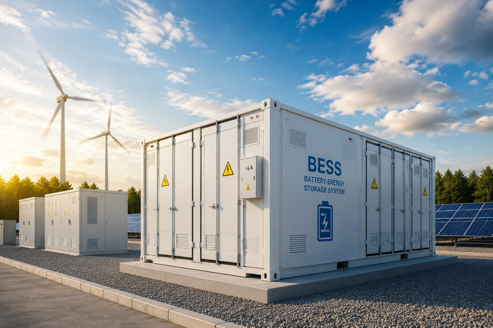
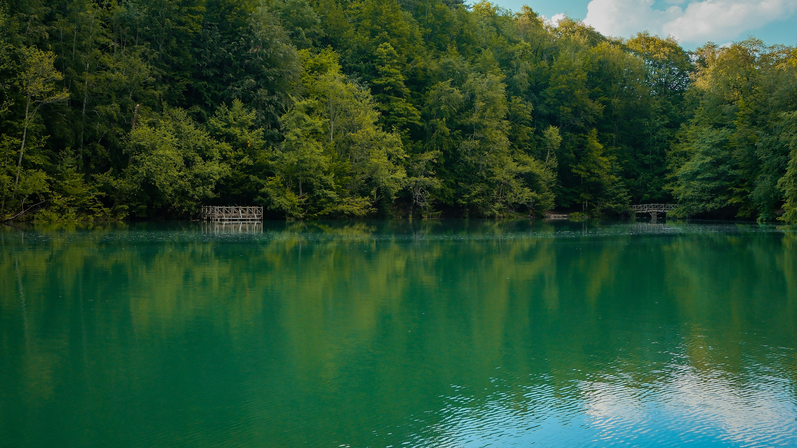

ÜRÜN GRUBU A
VITA Energy
İlk satış önceliği- Endüstriyel çatı GES
- Arazi GES
- Öz tüketim optimizasyonu
- Enerji etüdü ve verimlilik
- Elektrik kalite analizi
- Enerji izleme ve yönetimi
VITAVOLT GLOBAL · EPC & ENERGY CONSULTING
İşletmenizin enerji tüketimini, maliyetlerini ve yatırım ihtiyaçlarını değerlendiriyoruz. Danışmanlıkla başlayan süreci teknik analiz, mühendislik ve proje uygulamasıyla tamamlıyoruz.
VITAVOLT GLOBAL · TİCARİ ÜRÜN PORTFÖYÜ
İşletmelerin enerji, depolama, karbon, su, veri ve uygulama ihtiyaçları için bağımsız veya entegre ticari çözümler.
ÜRÜN GRUBU A

ÜRÜN GRUBU B

ÜRÜN GRUBU C
ÜRÜN GRUBU D
ÜRÜN GRUBU E
Yazılım kapsamı geliştirme ve doğrulama seviyesine göre sunulur. Mevcut hesaplama modülleri ile geliştirme aşamasındaki kabiliyetler ayrı tanımlanır.
ÜRÜN GRUBU F
Vitavolt Research bu ticari ürün portföyünden ayrı bir araştırma alanıdır. Araştırma projeleri, doğrulama ve pilot aşamaları tamamlanmadan ticari ürün veya hazır hizmet olarak sunulmaz.
İşletmenin enerji faturası, tüketim profili, üretim yapısı ve yatırım hedefleri incelenir. Tasarruf, verimlilik ve enerji yatırımı fırsatları önceliklendirilir.
Danışmanlık görüşmesi talep etKonut, villa, çatı ve arazi GES. Tüketim ve saha verisiyle GES / BESS için ücretsiz ön değerlendirme; ardından tasarım ve mühendislik. Panel adedi, kWp, üretim ve alan kısıtı birlikte değerlendirilir.
VITA HOME · Mesken GESGES detaylarıBatarya enerji depolama; gece tüketimi, kesinti ihtiyacı, pik yük ve kullanım profiline göre ön değerlendirilir.
DetayFabrika, OSB ve ticari tesisler için mühendislik, tedarik ve uygulama koordinasyonu proje bazlı yürütülür.
İzmir GESEnerji verimliliği, karbon ve sürdürülebilirlik değerlendirmeleri tesis verisine göre ele alınır.
KarbonKarbon yönetimi, SKDM/CBAM, Türkiye ETS, ESG, TSRS, sürdürülebilirlik, su ve kaynak verimliliği ile sürdürülebilir yatırım kararları tek danışmanlık çatısında.
Danışmanlığı inceleÖncelikli bölgesel sayfalar: Kuşadası GES · Çeşme / Alaçatı GES · Marmaris GES · Bodrum GES.
Mesken GES taleplerinde fiyat web sitesinde yayınlanmaz; ticari çalışma proje ve saha verileri doğrultusunda ayrıca hazırlanır.